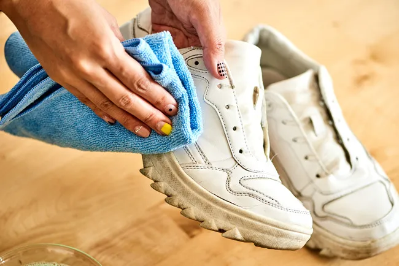
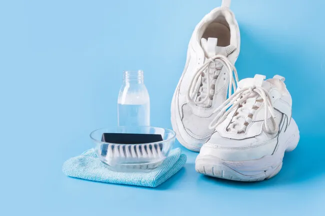
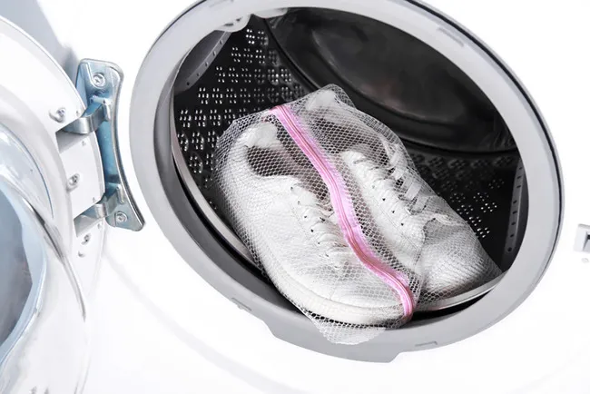
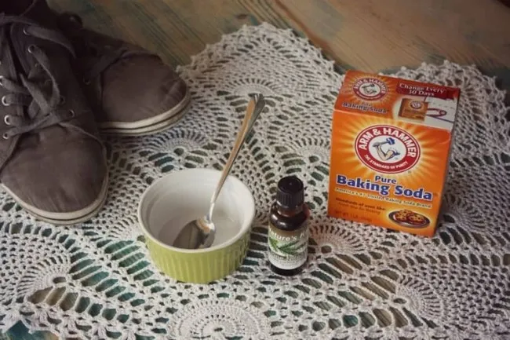
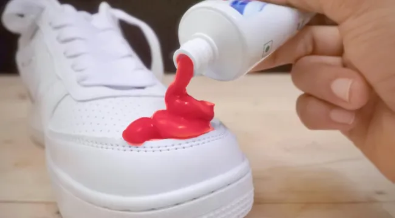
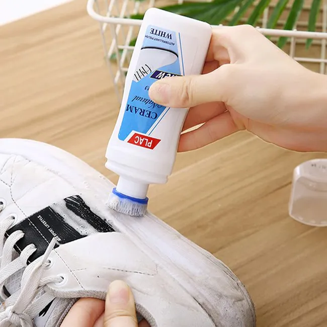
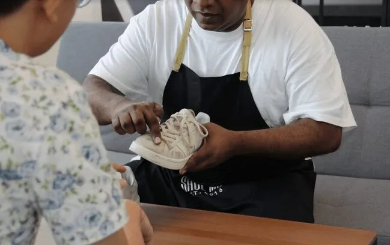

VỆ SINH GIÀY ĐÚNG CÁCH
Đăng ngày: 05/11/2024
Việc mang những đôi giày thể thao mà có những vết ố vàng hay có mùi thì sẽ khiến bạn cảm thấy
không thoải mái và để lại những ấn tượng không tốt cho những người xung quanh. Vì vậy, bạn cũng cần phải
biết
cách vệ sinh đôi giày thể thao đúng cách. Vậy giặt giày thể thao như thế nào để đôi giày luôn trắng sáng
như mới
và không còn những mùi hôi khó chịu?
Mục Lục
- Một số lưu ý trước khi vệ sinh giày
- Hướng dẫn tự giặt giày thể thao tại nhà
- Xác định chất liệu trước khi vệ sinh giày thể thao
- Hướng dẫn cách giặt giày thể thao bằng máy giặt
- Vệ sinh giày thể thao với baking soda và giấm
- Vệ sinh giày thể thao với kem đánh răng
- Sử dụng dung dịch vệ sinh chuyên dụng cho giày thể thao
- Sử dụng dịch vụ vệ sinh giày chuyên nghiệp
Một số lưu ý trước khi vệ sinh giày
Trước khi vệ sinh những đôi giày thể thao của mình, các bạn cần phải lưu ý một vài điều sau đây để
đảm bảo hiệu quả được tốt nhất:
- Không giặt giày với nước quá nóng và bàn chải quá cứng vì sẽ làm mòn và hỏng giày.
- Không phơi giày dưới nắng mặt trời quá gắt vì nắng nóng sẽ gây hư hại và phai màu giày.
- Nên sử dụng các dung dịch tẩy rửa chuyên dụng cho giày thể thao. Nếu dùng chất tẩy rửa mạnh như nước tẩy, bột giặt thì cần pha loãng. Nếu không giày sẽ rất dễ bị bong tróc, sờn rách.
- Chỉ nên sử dụng máy giặt khi bạn không có thời gian. Còn lại nên tự giặt giày bằng tay để giữ form cho giày.

Hướng dẫn tự giặt giày thể thao tại nhà
Xác định chất liệu trước khi vệ sinh giày thể thao
Việc xác định được chất liệu trước khi vệ sinh giày là vô cùng quan trọng. Công tác vệ sinh giày của bạn sẽ
dễ dàng hơn
nếu bạn biết phân loại vải của đôi giày. Hiện nay, những loại giày thể thao thường được làm bằng một số chất
liệu như là
canvas, da, vải lưới, cao su, da lộn,....
Nếu biết được những đặc điểm của loại vải của đôi giày mà bạn muốn vệ sinh sẽ giúp bạn vệ sinh một cách nhanh chóng. Hơn nữa điều này cũng giúp đôi giày của bạn tránh những tác động không đáng có của các sản phẩm vệ sinh giày.
Nếu biết được những đặc điểm của loại vải của đôi giày mà bạn muốn vệ sinh sẽ giúp bạn vệ sinh một cách nhanh chóng. Hơn nữa điều này cũng giúp đôi giày của bạn tránh những tác động không đáng có của các sản phẩm vệ sinh giày.

Hướng dẫn cách giặt giày thể thao bằng máy giặt
Với sự thông dụng của giày thể thao hiện nay thì một số loại giày được làm từ
những chất liệu để có thể linh hoạt khi vệ sinh. Giặt giày bằng máy giặt đem lại sự thuận tiện và nhanh
chóng.
Ngoài ra cách giặt này sẽ giúp bảo vệ da tay của bạn khi mà tiếp xúc với bột giặt.
Cách vệ sinh giày thể thao bằng máy giặt vô cùng đơn giản:
Cách vệ sinh giày thể thao bằng máy giặt vô cùng đơn giản:
- Bước 1: Trước khi vệ sinh, bạn hãy tháo dây giày và lót giày ra để vệ sinh riêng.
- Bước 2: Sau đó bạn có thể xả qua vết bẩn trên giày bằng nước. Tiếp theo bạn có thể cho giày vào túi zip và đổ xà phòng vào máy để giặt giày.
- Bước 3: Khi giặt giày bạn cũng có thể sử dụng chức năng vắt của máy giặt.
- Bước 4: Chờ đến khi máy giặt xong, bạn mang giày treo phơi tại những chỗ thoáng mát, chờ khô rồi bảo quản.

Vệ sinh giày thể thao với baking soda và giấm
Như bạn đã biết baking soda và giấm phổ biến trong việc vệ sinh các vết ố vàng hay mảng bám.
Trong khi giặt giày thể thao hoặc những đôi giày thể thao, bạn cũng có thể kết hợp được những
loại này với nhau để vệ sinh đôi giày của mình.
Cách thực hiện:
Cách thực hiện:
- Bước 1: Pha dấm và baking soda theo tỷ lệ 2:3 thành một dung dịch để giặt giày.
- Bước 2: Bôi dung dịch này lên những vết bẩn và mảng bám ở trên giày (khuyến khích bôi dung dịch lên hết giày).
- Bước 3: Chờ khoảng 15 - 20 phút xả nước và giặt giày bằng xà phòng. Nên kết hợp sử dụng bàn chải đánh răng trong việc giặt giày.
- Bước 4: Xả lại với nước sạch và đem đi phơi tại những nơi thoáng mát.

Vệ sinh giày thể thao với kem đánh răng
Nhiều người thường có suy nghĩ rằng kem đánh răng chỉ có công dụng chỉ để đánh răng. Nhưng khi sử dụng loại
sản phẩm này vào công việc vệ sinh giày thì nó mang lại những kết quả đáng kinh ngạc.
Nếu bạn đang có một công việc đột xuất mà muốn vệ sinh giày ngay tức khắc thì có thể sử dụng kem đánh răng để làm sạch giày.
Cách thực hiện:
Nếu bạn đang có một công việc đột xuất mà muốn vệ sinh giày ngay tức khắc thì có thể sử dụng kem đánh răng để làm sạch giày.
Cách thực hiện:
- Bước 1: Lấy một lượng nhỏ kem đánh răng
- Bước 2: Dùng bàn chải đánh răng và nước ấm để vệ sinh những vết bẩn trên mặt giày
- Bước 3: Lau thật khô và giày sẽ trắng như mới trở lại.

Sử dụng dung dịch vệ sinh chuyên dụng cho giày thể thao
Với sự phát triển của khoa học ngày nay để phục vụ và mang đến cho con người những sản phẩm tiện ích
và tiết kiệm thời gian. Dung dịch vệ sinh chuyên dụng cho giày thể thao được thiết kế thuận tiện và dễ sử
dụng.
Trên thị trường hiện nay có rất nhiều thương hiệu dung dịch vệ sinh giày thể thao như Jason Markk, Reshoevn8r,... Bạn có thể sử dụng những dung dịch này thay cho việc giặt giày thể thao nhưng vẫn đảm bảo đôi giày của mình lúc nào cũng trắng sáng như mới và chất lượng.
Trên thị trường hiện nay có rất nhiều thương hiệu dung dịch vệ sinh giày thể thao như Jason Markk, Reshoevn8r,... Bạn có thể sử dụng những dung dịch này thay cho việc giặt giày thể thao nhưng vẫn đảm bảo đôi giày của mình lúc nào cũng trắng sáng như mới và chất lượng.

Sử dụng dịch vụ vệ sinh giày chuyên nghiệp
Nếu bạn đang sở hữu những đôi giày thể thao mà bạn rất yêu quý và giữ gìn chúng. Việc vệ sinh cho giày là
công việc
không thể thiếu để có thể giữ độ mới của giày lâu nhất.
Nếu bạn không có thời gian trong việc vệ sinh, muốn chăm sóc đôi giày của mình đúng cách thì sử dụng dịch vụ vệ sinh giày chuyên nghiệp là sự lựa chọn tối ưu cho bạn. Chỉ cần bỏ ra số tiền từ 30.000 - 50.000 đồng là bạn đã có thể nhận về một đôi giày trắng sáng, sạch sẽ và thơm tho.
Nếu bạn không có thời gian trong việc vệ sinh, muốn chăm sóc đôi giày của mình đúng cách thì sử dụng dịch vụ vệ sinh giày chuyên nghiệp là sự lựa chọn tối ưu cho bạn. Chỉ cần bỏ ra số tiền từ 30.000 - 50.000 đồng là bạn đã có thể nhận về một đôi giày trắng sáng, sạch sẽ và thơm tho.
